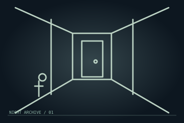

值班手冊
操作：點按帶文字的行動按鈕。鍵盤 Tab 移動焦點，Enter／空白鍵確認；焦點不在控制項時，1–9 觸發前九個行動，H 提示、R 重開、空白鍵暫停。所有目標和聲音線索均有文字，不必開聲音或快速連點。
提示只解釋下一步；「示範一步」透過相同合法按鈕走一步。任一輔助會永久標記這次路線，儲存後仍然保留，不會覆蓋手動紀錄。要重新挑戰手動通關，按「重開本夜」。
這是非血腥、回合制的幻想異常觀察遊戲；沒有外部 AI、帳號或網路對手。100個任務驗證的是普通規則下存在合法生還路徑，不保證對任何自主對手必勝。
LIVE EVIDENCE / 可見證據
正在載入任務…